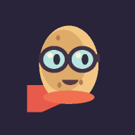

Ein bisschen zielen. Ein bisschen hoffen. Ganz viel Kartoffel.
Noch eine Runde? Hol dir die Knolle auf deinen Startbildschirm.
01 / FingerspitzengefühlLaden, loslassen. Im Flug mit Space Schwung holen.
02 / Beute statt BestweiteSchrott einsammeln oder mit Landungen deinen Garten vergrößern.
03 / Hoffnung statt GarantieGelb ist mutig. Rot bleibt ein kleines Glücksspiel.
Noch keine Knolle unterwegs. Deine Bühne.

Halten. Loslassen. Kartoffelchaos.
Danach startest du das Spiel über sein eigenes Symbol. Zum Spielen brauchst du weiterhin eine Internetverbindung.
Speichern ist gesperrt. Dein Fortschritt bleibt nur in dieser Sitzung.
Eine Knolle. Noch jede Menge Möglichkeiten.
v0.6.0
Von der Knolle in vier Richtungen: Zwei Stufen lassen den nächsten Spross wachsen. Außen verzweigen sich die Wege – ein Zugang genügt. 20 Level, 20 Punkte.
Punkte kostenlos neu verteilen – zwischen zwei Flügen. Jeder Versuch bringt XP, auch ein Fehlstart.
Deine besten fünf Flüge · auf diesem Gerät
Öffentlich eingereichte, servergeprüfte Flüge. Namen sind frei wählbar.
Noch kein Rekord. Zeit für die erste Knolle!
Nur fürs Aussehen. Keine Flugvorteile. Jeder Kauf schaltet einen Look dauerhaft frei.
Kaufen und umziehen zwischen zwei Flügen. Dein Gesamtzähler für Erfolge bleibt erhalten.
Link markieren und kopieren. Er enthält den Flug und die Talente.
Deine Flugkarte wird gezeichnet …
Am Computer: Im Feld zielen, linke Maustaste halten, loslassen. Alternativ den großen Schussknopf halten. Pfeiltasten ändern den Winkel; die Leertaste lädt und feuert beim Loslassen. Während des Flugs gibt ein neuer Druck auf Space zusätzlichen Schwung.
Am Handy: Quer halten. Im Spielfeld den Finger halten und zum Zielen bewegen. Loslassen schießt. Alternativ den Ladeknopf halten. Im Flug antippen für zusätzlichen Schwung.
Die Ladung pendelt hin und her. Gelb ist meist gut überlebbar, Pink ist kompletter Wahnsinn – aber auch eine nackte Kartoffel kann einen Extremstart überleben. Die Fahne zeigt den langsam wechselnden Wind. Ab dem Abschuss bleibt er für den gesamten Flug gleich.
Schwebender Schrott bleibt dir auch bei einer Bruchlandung. Strecke bringt zusätzlich Material, eine heile Landung einen Bonus. Jeder Versuch bringt Erfahrung. Jedes Level gibt einen Talentpunkt, bis maximal 20. Jedes Talent hat drei einzeln anklickbare Stufenfelder. Ein leeres Feld aktiviert die Stufen bis dorthin; ein aktives Feld nimmt diese und höhere Stufen zurück. Zwei Ränge öffnen den nächsten verbundenen Knoten. Die äußeren Talente erreichst du über einen von zwei Sprossen. Mit den Stufenfeldern oder „Alle Punkte zurück“ kannst du kostenlos umskillen. Gesammelter Schrott gibt zusätzliche XP.
Du startest mit zwei Schwung-Impulsen. Jedes zerstörte UFO gibt einen verbrauchten Impuls zurück, sofern du den Treffer überlebst – maximal zwei auf Vorrat. Kräftige Bodenaufpralle pflanzen ein bis drei Kartoffeln; kleine Hüpfer auf derselben Stelle zählen nicht mehrfach. Dein lokaler Gesamtzähler schaltet bei 10, 50 und 200 Pflanzen Erfolge frei. Nach schwachen Bodenabprallern rollt die Kartoffel aus. Die Runde endet erst beim Stillstand.
Notsprengung: Im Flug den Knopf oder R drücken: Püree, Beute behalten und direkt neu laden. Lautsprecher und Musiknote schalten Effekte und Musik unabhängig an oder aus.
Dialoge und versteckte Tabs pausieren den Flug. Escape bricht das Aufladen ab.